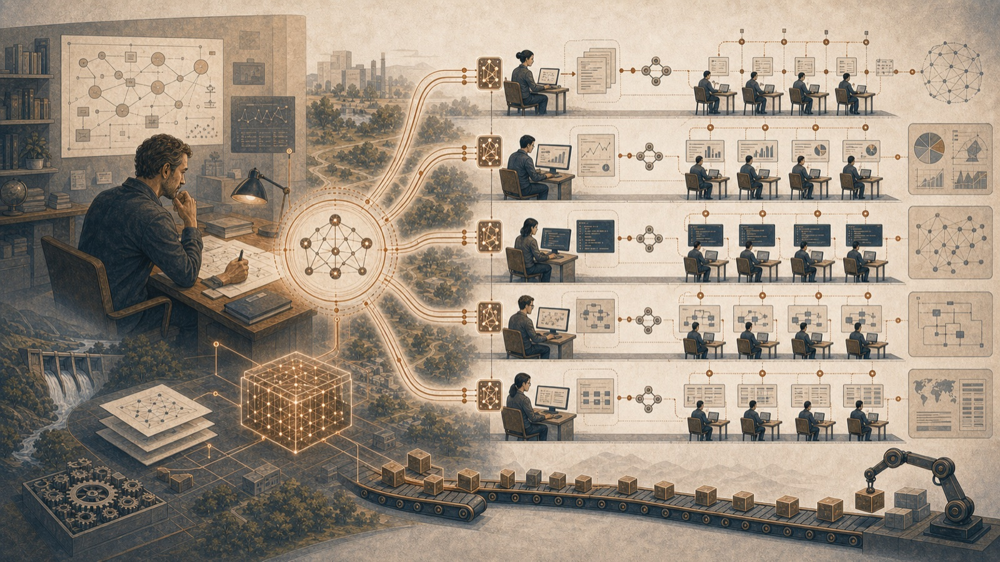
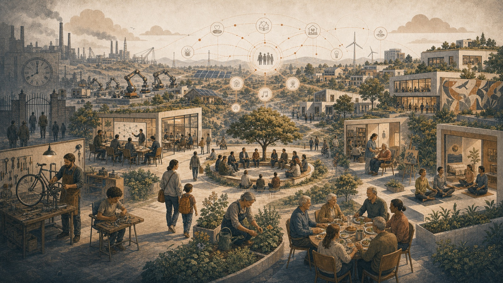

We live in a time that is still far too often described in words that are too small. In public debate, people speak of digitalization, automation, AI tools, efficiency gains, skills development, and innovation. But those concepts are no longer sufficient. They describe improvements within a system that is fundamentally unchanged. What is now emerging is larger than that. It is not merely a new wave of technology, not merely another step in industrial rationalization, not merely a faster computer or smarter software. It is the beginning of a civilisational shift.
From this perspective, AI is not primarily one tool among others. AI is the first technology we have built that, at scale, begins to compete with humanity's own cognitive role: interpreting, reasoning, planning, formulating, analyzing, comparing, choosing, and coordinating. Earlier machines replaced or amplified muscles, movement, mechanical precision, and the storage of information. The new wave is instead beginning to press against the very center of what has made human beings economically indispensable in the modern world. When thinking, or at least parts of thinking, becomes cheap to copy, quick to scale, and easy to connect to other systems, then it is not only individual work tasks that change. The very logic of the economy changes.
We are therefore not merely facing a transformation of working life. We are facing the possibility that the old social order, built on scarcity, wage labor, and extractive growth, will gradually begin to lose its stability. If intelligence becomes almost free to multiply, if energy becomes more abundant and increasingly cheaper across large parts of the system, if transport is automated, and if parts of food and materials production can be produced with biological precision and lower resource inputs, then it is not enough to speak of productivity gains. We must speak of a society in which old assumptions about work, value, ownership, and meaning begin to loosen.
This does not mean that the future will automatically be bright. On the contrary, the transition may be harsh, uneven, and full of conflict. History shows that when technological leaps are sufficiently large, institutions, norms, and political systems rarely keep pace. Old rules continue to govern a society that has already changed beneath the surface. Power concentrates faster than responsibility. New forms of production create value while systems of security are still built for yesterday. In such periods, the same technology that promises greater abundance in the long term can, in the short term, create stress, exclusion, political confusion, and social unrest.
That is precisely why this period must be understood correctly. The question is no longer whether AI will affect the economy. The question is how deep that effect will go, how quickly it will interact with other exponential technologies, and whether our societies are capable of building a new contract before the old one loses its function.
When Thinking Becomes Cheap

For most of human history, advanced cognition has been an extremely scarce resource. Societies have always had fewer people capable of understanding complex relationships, designing robust systems, making qualified decisions, and navigating large quantities of information than they have needed. That is why education, experience, and expertise have held such high value. Someone who could write a contract, design a process, program a solution, optimize a flow, interpret a market, or structure uncertainty could do something that was not easy to copy.
It is this scarcity that is now being challenged. AI models are not yet omniscient, flawless, or uniformly competent. They hallucinate, misunderstand, and vary in quality depending on the task, the data, and the integration. But they are already good enough to begin broadly pushing down the cost of qualified intellectual labor. They can summarize, compare, translate, formulate, structure, analyze patterns, write code, propose solutions, process large bodies of text, and generate useful decision support in seconds. When combined with tools, databases, business systems, and increasingly agentic workflows, they move from being assistants to becoming operational components in real processes.
This marks a break with earlier digitalization. The spreadsheet did not replace the economist. The search tool did not replace the analyst. Email did not replace the manager. But systems that can perform parts of cognitive work themselves change the balance of power within the organization. They make it possible for fewer people to do more. They give senior expertise greater reach. They allow parts of the work that previously required trained personnel to be performed without every step passing through a human hand.
In the short term, this looks like a productivity boost. And that is precisely why so many underestimate its explosive force. If every qualified employee suddenly becomes twice as capable, it first sounds like ordinary efficiency improvement. But if the same logic continues, and if workflows gradually become more autonomous, a much larger question arises: what happens to a society in which the economic necessity of large parts of cognitive labor rapidly declines?
It is easy to believe that new jobs will then simply arise on their own, as in previous technological shifts. In part, they will. New services, new occupations, and new needs always emerge. But this time, it is not only one sector or one type of machine that is being automated. It is the very generality of human problem-solving that is being challenged. The classic consolation has been that machines take over the repetitive while human beings move upward in the value chain. The problem now is that the machine itself is beginning to move upward.
From Tools to Systems
The decisive change therefore lies not only in the capacity of the models, but in how they are connected to entire organizations. As long as AI is used as a separate tool, it feels manageable. An employee opens a chat, asks for help, copies the answer, and moves on. But when AI becomes embedded in processes, product development, quality assurance, supply chain, planning, customer communication, finance, HR, law, and governance, it ceases to be an auxiliary instrument at the edge. It becomes part of the organization's nervous system.
Here a mental error occurs in many executive groups and political discussions. People still ask how AI can help individual roles, when the real question is how AI changes the architecture of the entire system. The old organization was built around the fact that human beings were the bottleneck for analysis, decisions, and coordination. For that reason, levels, meetings, reports, middle managers, specialist functions, and administrative layers were created so that information could move through human brains at a reasonable pace. But if information processing and coordination become cheaper and faster, the pressure to redraw the organization will also increase.
This does not mean that companies become staffless overnight. It means that more and more tasks that previously justified a certain number of people, a certain number of meetings, or a certain number of organizational layers will be called into question. Many roles exist not because they carry a unique human value in themselves, but because the system has historically needed them to make its information flow work. When that premise changes, the roles change as well.
This is where AI moves from being an effective technology to becoming a social force. For when entire organizations become less dependent on human intermediary work, intermediate levels, and intermediate translation, broad pressure arises on the white-collar stratum. This does not concern only junior tasks. It also concerns a large amount of qualified white-collar work that has long been regarded as protected precisely because it has been cognitive.
The Factory Floor Often Sees the Change First
Much of the public debate about AI still takes place in seminars, on opinion pages, or in presentations about office work. But one of the clearest ways to understand what is happening is to view it from production, process, and actual operations. There, the significance of technology becomes concrete more quickly. There, one can see how small improvements in analysis, planning, quality, documentation, or flow control have large effects in reality. There, it also becomes clear how valuable it is when someone with deep operational understanding can suddenly amplify themselves with cheap cognitive capacity.
On the factory floor, in planning, in improvement work, and in daily management, AI is not primarily a question of spectacular visions. It becomes a question of being able to see patterns faster, make better decisions earlier, document more clearly, analyze deviations more systematically, and build support around people who already understand the operation. The person who understands process, quality, and production suddenly gains a new kind of reach.
That is why industry-adjacent perspectives are so important in this discussion. The AI shift will not first be noticed as a philosophical idea. It will be noticed as small but cumulative productivity leaps in real organizations. Fewer hours for analysis. Fewer bottlenecks in reporting. Better decision support. Shorter lead times from problem to action. More capacity in the same organization. Fewer excuses to wait.
This is also where one sees that the technological shift is not only about replacing people. At least as important is that it changes the relationship between individuals, competence, and scale. A skilled person can suddenly do things that previously required a team. An experienced engineer can extend their scope. An improvement leader can work much more broadly. A manager can receive support in seeing connections that previously drowned in information. At the beginning, this is more a multiplier effect than a pure replacement effect. But the multiplication is itself destabilizing, because over time organizations will begin to reconsider how many people are actually needed to achieve the same results.
From Scarcity Economy to Capacity Economy
At the same time, it is important to understand that AI does not operate in a vacuum. Its real significance arises in interaction with other exponential technologies, above all cheaper renewable energy, better storage, more advanced automation, and, in the long term, new forms of biological production. This is what makes the question not only about jobs, but about the entire foundational structure of the economy.
Our current economy is built on the fact that much of what we need has a marginal cost. Energy costs money. Transport costs money. Food requires land, inputs, logistics, and labor. Advanced intelligence is expensive because it is tied to educated human beings. Many institutions and business models are adapted to this world. They make money by administering, distributing, or controlling what is limited.
But if several of these costs are pushed down at the same time, the playing field changes. If intelligence becomes cheaper, energy cheaper, transport more automated, and parts of production more local and data-driven, then we move gradually from a scarcity economy to a capacity economy. This does not mean that everything becomes free. It means that more and more central functions acquire such low marginal costs that the old logic of pricing becomes less stable.
This is one of the hardest ideas to communicate, because people easily hear the word abundance and think it is about naive techno-utopianism. But the point is not to promise paradise. The point is to direct attention to the structural consequences when certain central inputs become radically cheaper than before. A society in which intelligence can be copied almost for free behaves differently from a society in which it is tightly bound to human education time. A society with very cheap electricity behaves differently from one in which the cost of energy imposes hard limits. A society with local, automated production behaves differently from one in which everything depends on long and vulnerable global chains.
The decisive question therefore becomes not only how much can be produced, but who controls productive capacity and how access is organized.
Energy as a Multiplier
There is a risk that AI is discussed as if it were primarily a software issue. But AI is also fundamentally an energy issue. Computing capacity requires electricity. Data centers require electricity. Robots, autonomous vehicles, sensor networks, and automated production require electricity. For that reason, developments in solar, wind, and storage are not a side issue, but part of the same civilisational shift.
As the cost of renewable energy continues to fall, two important effects arise. One is direct: it becomes cheaper to run the systems that carry the AI economy. The other is systemic: when energy becomes cleaner, more distributed, and at times very cheap, it becomes possible to electrify more parts of the economy and thereby connect more sectors to the same technological base.
Cheap energy lowers the threshold for automation. Cheap energy lowers the cost of processing data. Cheap energy lowers the cost of running computation-heavy models. Cheap energy can also lower the cost of water purification, climate control, cultivation systems, local manufacturing, and new types of biological production. The energy system therefore functions as a multiplier for the rest of the transition.
This also means that old assets risk losing value faster than the market is prepared for. Fossil infrastructure, certain older energy models, and parts of the capital structure built around previous cost levels may become less sustainable when new technology offers significantly lower marginal costs. The transition thus becomes not only an opportunity but also a redistribution of power and value, in which large existing interests have much to lose.
Transport, Food, and the Broader Pressure on Marginal Costs
Similar logic is visible in other sectors. The economics of transport can change when electrification, software control, better batteries, and gradually more autonomous operation begin to reduce costs and raise utilization rates. A person who privately owns a vehicle is, in practice, paying for an expensive object to stand still most of the time. When transport is instead organized as a service, with high utilization and lower operating costs, private ownership in certain use cases begins to appear as an inefficient residue from an earlier economy.
The food system may, over time, face similar pressure. Here the timelines are more uncertain and development is likely to be uneven, but the principle is important: if parts of food production can be moved from land-intensive, weather-dependent, biologically inefficient systems to more precise, local, and technologically governed processes, then both the cost structure and the resource logic change. The effect is not only cheaper production but potentially also lower vulnerability, shorter chains, and reduced dependence on certain old structures.
When many sectors simultaneously face such pressure on marginal costs, a deep civilisational change arises. The economy then no longer consists primarily in managing limited flows through the costly coordination of human labor. It begins instead to revolve around how capacity, access, and ownership are distributed in a system where more and more can be done cheaper, faster, and with less human input.
The Turbulent Transition
The most likely outcome, therefore, is not that we enter a gentle post-scarcity society marked by harmonious adaptation. The most likely outcome is a turbulent transition in which the old system loses function before the new one has had time to gain legitimacy. Between roughly the second half of the 2020s and 2040, this tension may become the dominant social question.
The first phase is already here: AI strengthens individuals and drives down the cost of cognitive labor. The second phase will come when agentic workflows become more stable and begin to take over larger parts of operations from beginning to end. The third phase will come when this is linked more closely to physical automation, robotics, and more self-directed operations in an increasing number of environments. The fourth phase will be political: the struggle over how the value from this development should be distributed, and which institutions should sustain a society in which wage labor can no longer serve as the sole basis for security and status.
In this transition, much of what is today perceived as stable will feel less self-evident. Career paths may erode. Professional identity may weaken. Educational models may begin to feel obsolete. Companies will reorganize faster than people can rebuild their lives. The public sector will be squeezed between growing needs and outdated structures. Union models may be challenged by having to negotiate in an economy where productivity increasingly resides in systems, data, and models rather than in human hours.
The transition therefore risks creating both material and psychological instability. It is possible that some groups will become better off economically while feeling more replaceable than ever. It is also possible that other groups will be directly harmed by lost demand for their labor before any new social safety net has had time to take shape. In such an environment, politics can quickly become reactive, erratic, and polarized.
The Question of Power at the Center
This leads to a core question often hidden behind technological optimism: who will own the cheap intelligence? Who will own the robotics, energy systems, computing capacity, large models, data infrastructure, and platforms through which all this capability is connected?
It is entirely possible that the technology itself will drive marginal costs downward while ownership becomes sharply concentrated upward. Such a society could produce more than ever and still become socially harsher. It could have the capacity to provide security for everyone but choose to organize abundance through new forms of artificial scarcity, subscriptions, platform power, and asymmetric control. In that case, we would not have a liberated civilization, but rather a kind of digital feudalism in which a small number of actors control the infrastructure of intelligence and the rest of society gains access on conditional terms.
This is not a theoretical digression. It is the very question of power in the AI shift. If productive capacity becomes ever less dependent on mass labor but ever more dependent on computing capacity, energy, data, and automated systems, then ownership of these assets becomes society's central line of conflict. Distribution policy can no longer primarily be built on taxing labor after the fact. It must increasingly concern how the production systems of the future are owned, regulated, and shared.
There is also a geopolitical dimension here. States and regions that control chips, energy, infrastructure, data, robotics, and expertise will be able to pull ahead. The difference between being a producer of the systems of the future and being a dependent user of them may prove decisive. For smaller export-dependent countries, this becomes especially sensitive. To stand without one's own capacity, without strategic understanding, and without institutional speed in such a shift would be to voluntarily accept marginalization.
Sweden Risks Thinking Too Small
The Swedish conversation about AI is still often marked by the wrong scale. The debate tends to revolve around whether schools may use generative tools, whether an agency should produce guidelines, whether a municipality should have a policy, or whether a company should train its civil servants. All of this may be relevant in its own way, but it does not capture the magnitude of what is happening.
The problem is not that Sweden lacks intelligent people or technical capability. The problem is that much of the institutional discussion is still conducted as if AI were merely another digitalization issue within existing frameworks. Then the pace becomes too slow, the level of ambition too limited, and the social analysis too narrow. What is missed is that AI is not only a technology that improves the system. It is exerting pressure for the system itself to be renegotiated.
For a small, export-dependent, highly specialized country, this ought to be obvious. Sweden is strongly dependent on functioning industry, advanced expertise, trust, education, and high-quality institutions. Precisely for that reason, we have much to gain if we understand AI early and practically. But we also have much to lose if we react slowly and allow others to define both the infrastructure and the rules of the game.
Sweden's strength lies in its ability to combine technical knowledge, industrial grounding, and society-oriented problem solving. But for that to happen, AI must be understood as a national shift in capacity, not as an isolated software issue. The labor market, education, industrial policy, energy supply, welfare, defense, public digitalization, and democratic resilience must be thought together. A policy here and a testbed there are not enough. If the shift is civilisational, the response must also be systemic.
After Work
Perhaps the deepest question is not economic but existential. What happens to human beings when work loses its role as the self-evident center of life? In modernity, the job has been more than livelihood. It has provided daily structure, context, status, responsibility, belonging, and a way to measure oneself. Work has given people a place in the social narrative.
If this structure weakens, many will first think in economic terms: how are we to finance security? But that is only half the question. The other half is what will hold together people's everyday lives, identities, and self-respect when society can no longer lean as heavily on the work-centered model.
A post-work society does not automatically become more humane. It can become empty, fragmented, and passivizing if it is not built around something more than consumption. If people are no longer needed in the same way in production, society must become much better at assigning value to what previously stood in the shadow of wage labor: relationships, care, local responsibility, creation, learning, civic associations, nature conservation, spirituality, culture, and voluntary common work.
Here the future of education becomes decisive. An education system that primarily trains people for the labor market risks becoming insufficient in a world where the labor market changes faster than educational programs do. The education of the future must to a greater extent cultivate judgment, creativity, the capacity for cooperation, ethics, psychological resilience, and the ability to live meaningfully in a world where machines can do more of what previously gave human beings economic justification.
This is not a soft side issue. It is a civilisational question. If we do not succeed in formulating meaning beyond the job, even material progress will rest on social unrest.
A New Social Contract
It is therefore not enough to describe the upheaval. We must also dare to speak about what needs to be built in its wake. The old social model was not eternal. It emerged under certain material conditions: industrial production, human labor as a central input factor, national welfare systems, and an economy in which most people were needed to make society function. If these conditions change, the contract must change as well.
First, over time, systems of security need to become less one-sidedly dependent on wage labor. This can happen in different ways: through new forms of basic security, a citizen's dividend, common funds, broader ownership, or other models that allow citizens to share in the productivity gains of automation. The important point is the principle: if social wealth is increasingly created by systems that do not require broad human employment, access to that wealth must nevertheless be distributed widely if society is to remain legitimate.
Second, the state and public institutions must build real AI capacity. It is not enough to procure point solutions or write cautious guidelines. The state must understand the technology well enough to govern, use, scrutinize, and negotiate around it. Otherwise, society-sustaining functions will become dependent on external actors with greater technical competence than the institutions meant to regulate them.
Third, the question of ownership must be moved from the margin to the center. In a society where value increasingly arises in automated systems, one cannot pretend that the ownership structure is a secondary detail. It matters greatly whether the productive capacity of the future is owned in an extremely concentrated way or whether people, through pension funds, national funds, cooperative models, or other mechanisms, receive a broader share in it.
Fourth, a new cultural narrative about human dignity is required. As long as dignity is linked almost entirely to traditional work, every wave of automation will be experienced as an existential threat. A mature society must be able to recognize that a human being has value beyond his or her market function. This does not mean that ambition, responsibility, and achievement should disappear. It means that they can no longer, by themselves, define the human right to live a secure and meaningful life.
The Risks Must Not Be Underestimated
At the same time, it would be irresponsible to write about this without mentioning the deeper risks. The more autonomous, capable, and central AI systems become, the greater the risks of abuse of power, manipulation, security problems, and loss of human control. A society that becomes dependent on complex systems without understanding them becomes vulnerable. A society in which a few actors can shape information flows, decision support, and economic coordination on a global scale also becomes politically fragile.
There is also a more fundamental risk: that humanity is simply moving faster than its own institutional understanding. We can build tools whose aggregate consequences we cannot yet survey. We can create incentives that reward rapid deployment more than safety. We can end up in a situation where every individual actor feels compelled to hurry in order not to fall behind, even though everyone simultaneously knows that this increases the common risk.
For that reason, technical progress must be combined with an unusually high degree of sobriety. We need neither panic nor blind optimism. We need strategic realism. We need to understand that development is likely faster than many believe, that the consequences are broader than most debates acknowledge, and that passivity in this situation is not neutrality but a decision to let other forces set the rules of the game.
From a Work Society to a Society of Dignity

If one raises one's gaze high enough, the contours become clear. The era now approaching its end has been the era of scarcity. It has rested on the fact that human effort was necessary, that production required a great deal of labor, that energy was expensive, that intelligence was difficult to scale, and that social order could therefore be organized around work as both duty and basis of rights.
The era that may now begin to emerge looks different. In it, intelligence becomes more copyable, production more automatable, energy cheaper, certain marginal costs lower, and the coordination of society ever less dependent on human intermediary labor. This may become the beginning of a society of abundance. But it may also become the beginning of a very harsh transition in which old securities are broken down before new ones have had time to be built.
Everything, therefore, is not determined by the technology itself, but by how we choose to organize it. The real test of our time is not whether we can create artificial intelligence that is stronger than human beings across many tasks. The test of our time is whether we can build institutions, forms of ownership, and cultural narratives that allow this new capacity to benefit many rather than being locked away among a few.
That is why the AI question is fundamentally not technical. It is constitutional. It concerns how the rules of civilization are to be rewritten when the old connection between work, value, and survival weakens. It concerns whether we dare to leave an order in which the human place is legitimized primarily through economic function, and instead build an order in which technological abundance is used to strengthen human dignity.
If we fail, the result may be a world of concentrated power, mass insecurity, and a passivized population. If we succeed, we may open the way to something that was once almost unthinkable: a society in which fewer people are forced to sell their entire lives in order to survive, in which basic security is stronger, in which nature can recover, and in which humanity's highest task is no longer to keep the machinery of scarcity running.
This is what is at stake in the AI shift.
Not only how we work.
But how we live, what we value, and what kind of civilization we wish to leave behind.
This is what is at stake in the AI shift.
Not only how we work.
But how we live, what we value, and what kind of civilization we wish to leave behind.